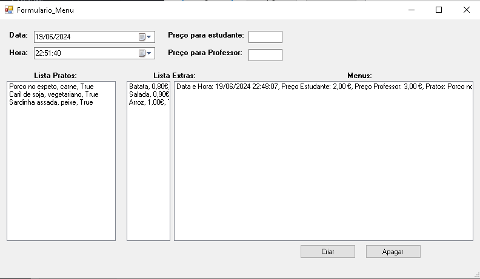
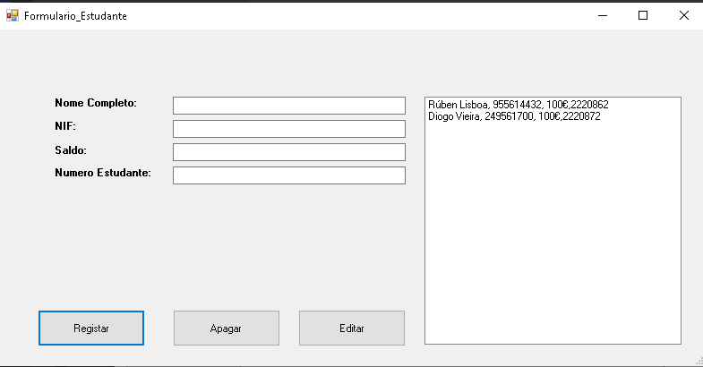
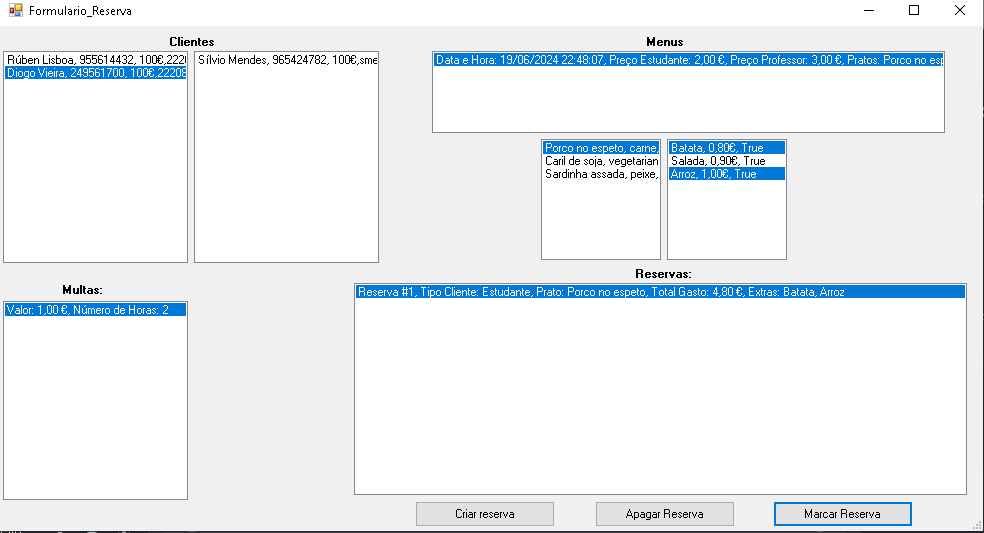

ICantina
Descrição do projeto
Este projeto consiste em um sistema de gestão para uma cantina escolar, desenvolvido para ajudar os funcionários da cantina a gerenciar menus, reservas, clientes, faturas e a aplicação de multas. O sistema é destinado a ser usado exclusivamente pelos funcionários da cantina, com funcionalidades que permitem o controle de pratos e extras oferecidos, gerenciamento de reservas de alunos e professores, e controle de saldo para cada cliente. Além disso, o sistema permite a criação de faturas, tudo isso integrado a uma base de dados relacional SQL Server.
Técnologias Utilizadas
- Linguagem de Programação: C#
- Framework: .NET Framework (WinForms)
- Base de Dados: SQL Server com Entity Framework
- IDE: Visual Studio
Imagens do Projeto


